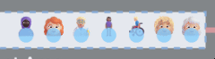
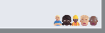

Getting Started
vidigi creates animations from event logs - records of what happens in your simulation and when. Here’s the basic process:
- Log events as your simulation runs (arrivals, queueing, resource use, departures).
- Define where events appear in your animation (x and y coordinates).
- Generate the animation using vidigi’s functions.
The rest of this page walks you through each step.
EventLogger, or TrialLogger?
If you use vidigi’s EventLogger (or TrialLogger) to record events, you can hand it straight to animate_activity_log() and reshape_for_animations() - there is no need to call .to_dataframe() first. With a TrialLogger, add run_number= to choose which replication to animate.
Prefer to work with DataFrames, or already have your own logging? That still works exactly as before - pass a pandas DataFrame with the required columns, filtered to a single run, and nothing changes.
Learn by example
The fastest way to understand vidigi is through worked examples. We recommend starting with these:
SimPy

A very simple example with one server
The simplest possible starting point - a single-step SimPy model with just one server. This example walks through using vidigi's EventLogger helper class to capture arrivals, queueing and resource use with the minimum of code changes to an existing model.

A slightly more complex example with multiple servers
Building on the single-server example, this model introduces multiple servers, so we need a way to track which specific resource each entity is using. Here we bring in vidigi's VidigiStore class, a drop-in replacement for SimPy's Resource that keeps this tracking automatic.

A very simple example with one server - avoiding the vidigi logger class
Not everyone wants to use vidigi's EventLogger helper class. This example strips things back to show the minimal set of columns and events vidigi actually needs, so you can build and populate your own event log by hand if that fits your model better.

Adding Vidigi to a Simple simpy Model (HSMA Structure) - vidigi 2.0.0 and above
A step-by-step walkthrough of retrofitting vidigi onto an existing SimPy model written in the style taught on the Health Service Modelling Associates (HSMA) programme. The core steps - adding logging, swapping in vidigi's resource classes, and building the animation - apply just as well if your model is structured differently.
Salabim
Ciw
Want all examples in one place? Browse the full example gallery →
An overview of the key vidigi functions
Following through the addition of vidigi to a SimPy model is a good way to get an overview of the key steps in adding vidigi to many kinds of models. Models created in Salabim, or without the use of a DES framework, will follow a very similar pattern.
Ciw is perhaps the most different as you don’t need to manually add logging steps.
However, the animation generation steps will be identical if using Ciw, so the latter half of the following instructions will still be relevant!
Step-by-step guide for SimPy
Step 1. Back up your existing model!
Before adding Vidigi to your model, make sure to back up your current version first.
While vidigi has been tested to ensure that it’s special resource classes work the same as existing SimPy resource classes, it’s still possible to accidentally change your model. There’s also a chance that the vidigi classes don’t work identically to SimPy classes in more complex scenarios with reneging, baulking, or other conditional logic around resource allocation.
Therefore, it’s highly advisable to check the key output metrics from your model before and after incorporating vidigi!
Even better, consider writing some formal backtests with pytest or your preferred testing framework.
Step 2. Log arrivals, queues, and departures
At its simplest, vidigi needs to know three things about each entity to be able to create an animation:
- when they arrived
- when they started an event
- when they left
Vidigi has support for two key event types: queues, and resource use.
Queues
In a queue, entities will move from left to right across the screen as the people in front of them leave the event. This is the default; passing queue_direction="right" (or setting it per event) mirrors the queue so it builds out to the right of its anchor instead, which reads better with entity emojis that face right — see Step 3.

Resource Use
When resource use event types are added, entities will go to a particular resource and stay in that position until the event completes, as well as displaying an icon for each individual resource at all times throughout the simulation. This makes it easier to see how long that resource is busy with that entity, and how many resources are in use or idle at each stage

When setting up your first animation, we would recommend just using queues to begin with.
This allows you to create a basic animation quickly and easily, with minimal changes to your code.
You can then easily swap out queues for resource use once you have the core model layout and structure implemented.
We would recommend using the EventLogger class to record key moments.
from vidigi.logging import EventLogger
logger = EventLogger(env=env, run_number=1)For arrivals and departures you only need the entity ID; for queues you also provide an event name; for resource use (start and end) you provide an event name and a resource identifier so vidigi can track which specific resource is in use. These arrival and departure events are used to decide when entities first appear and finally leave the animation; missing departures will slow things down as the log grows indefinitely.
You can capture these using EventLogger:
| When | Method |
|---|---|
| Entity arrives | logger.log_arrival(entity_id) |
| Starts waiting | logger.log_queue(entity_id, event="wait_for_nurse") |
| Starts using resource | logger.log_resource_use_start(entity_id, event="nurse_begins", resource_id) |
| Finishes using resource | logger.log_resource_use_end(entity_id, event="nurse_ends", resource_id) |
| Leaves | logger.log_departure(entity_id) |
This will create an event log in the required format for vidigi’s animation functions - for example:
| patient | event_type | event | time | resource_id |
|---|---|---|---|---|
| 15 | arrival_departure | arrival | 1.22 | |
| 15 | queue | enter_queue_for_bed | 1.35 | |
| 27 | arrival_departure | arrival | 1.47 | |
| 27 | queue | enter_queue_for_bed | 1.58 | |
| 12 | resource_use_end | post_surgery_stay_ends | 1.9 | 4 |
| 15 | resource_use | post_survery_stay_begins | 1.9 | 4 |
Each entity needs exactly one arrival and one depart event per run. Reusing an entity_id for a second arrival or departure - for example logging a recurring thing like a staff break under the same shared ID each time it happens - doesn’t just mean “the last one wins”. reshape_for_animations pivots the arrival/departure rows to work out when each entity was present, and duplicates are averaged together, giving the entity a time it was never actually at.
vidigi raises a ValueError naming the offending entity_id when this happens, so it fails loudly rather than quietly producing a wrong animation. If you need to log something that recurs, give each occurrence its own unique ID, or log it as a queue/resource-use event instead of an arrival/departure.
If you are adding vidigi to an existing model, you may have already created some form of logging for your animation.
animate_activity_log() and reshape_for_animations() accept a vidigi EventLogger or TrialLogger directly, or a plain pandas DataFrame. If you keep your own logging, you don’t have to switch to EventLogger - reshape your records into a DataFrame with the columns shown above (entity_id, event_type, event, time, plus resource_id for resource-use steps) and pass that instead.
Passing a TrialLogger? Add run_number= to pick the replication to animate - vidigi animates one run at a time.
Step 3. Determining event positioning in the animation
You need to tell vidigi where each queue and resource should appear in the animation. The easiest way is to create a DataFrame with one row per event position. The minimum required columns are:
event: Must match the event name used in the event log. Each event must appear on exactly one row — a repeated event name places every entity at that step in several positions at once, so they appear to jump between them at random.create_event_position_dfandgenerate_animation_dfwarn if they spot this (or two different events sharing the samex/y).x: X co-ordinate of the event for the animation. This will correspond to the bottom-right hand corner of a queue, or the rightmost resource (or the bottom-left corner / leftmost resource when that event builds to the right — seedirectionbelow).y: Y co-ordinate of the event for the animation. This will correspond to the lowest row of a queue, or the central point of the resources.label: Text label for the stage. This can be hidden at a later step if you opt to use a background image with labels built-in. Use<br>for line breaks.direction(optional):"left"(the default) builds the queue out to the left ofx;"right"builds it out to the right, mirroring the layout so the anchor becomes the bottom-left corner. Leave it unset to follow the animation-widequeue_direction.
Vidigi provides helper classes and functions for setting this up. For SimPy or manually created logs, we need to make sure the event name matches the event log. Every entity must log an arrival and a depart event (see Populating Event Logs); ArrivalPosition and ExitPosition are EventPosition subclasses that fill in those two names (and a default label) so you don’t have to:
from vidigi.utils import (
create_event_position_df, EventPosition, ArrivalPosition, ExitPosition
)
event_position_df = create_event_position_df([
ArrivalPosition(x=50, y=450),
EventPosition(event="treatment_wait_begins", x=205, y=275,
label="Waiting for Treatment"),
EventPosition(event="treatment_begins", x=205, y=175,
label="Being Treated"),
ExitPosition(x=270, y=70),
])Every event name your log can produce needs a row here, or entities using it vanish from the animation rather than moving to it. generate_animation_df looks up each snapshot’s coordinates by merging on event; an event with no match gets no coordinates, and Plotly drops it from that frame instead of drawing it somewhere sensible — the entity just disappears, then flies in from the top-left corner once a positioned event takes over again.
It’s easy to miss because some events are safe to leave out in practice: if a step is always logged at the exact same instant as the very next one (a common pattern for resource_use_end), it’s never actually selected as an entity’s current state, so it’s never rendered. That’s a coincidence of how your model logs events, though, not something vidigi guarantees — when in doubt, give every event a position. generate_animation_df now warns automatically whenever a gap like this is actually rendered, so you don’t need to check for it by hand.
By default every queue builds out to the left of its anchor. To flip the whole animation, pass queue_direction="right" to animate_activity_log() (or generate_animation_df() / generate_animation()). To flip just one stage, give that EventPosition its own direction:
event_position_df = create_event_position_df([
ArrivalPosition(x=50, y=450),
EventPosition(event="treatment_wait_begins", x=205, y=275,
label="Waiting for Treatment", direction="right"),
EventPosition(event="treatment_begins", x=205, y=175,
label="Being Treated"),
ExitPosition(x=270, y=70),
])A per-event direction always wins over the animation-wide queue_direction. Stage labels automatically move to the clear side of a right-building queue.
If you prefer not to use the helpers, you can create the DataFrame directly from a list of dictionaries:
event_position_df = pd.DataFrame([
# Triage
{"event": "triage_wait_begins",
"x": 160, "y": 400, "label": "Waiting for<br>Triage"},
{"event": "triage_begins",
"x": 160, "y": 315, "resource": "n_triage", "label": "Being Triaged"},
# Trauma pathway
{"event": "TRAUMA_stabilisation_wait_begins",
"x": 300, "y": 560, "label": "Waiting for<br>Stabilisation"},
{"event": "TRAUMA_stabilisation_begins",
"x": 300, "y": 500, "resource": "n_trauma", "label": "Being<br>Stabilised"},
{"event": "TRAUMA_treatment_wait_begins",
"x": 630, "y": 560, "label": "Waiting for<br>Treatment"},
{"event": "TRAUMA_treatment_begins",
"x": 630, "y": 500, "resource": "n_cubicles", "label": "Being<br>Treated"},
{"event": "depart",
"x": 670, "y": 330, "label": "Exit"},
])Step 4. Create the animation
There are two main ways to create the animation:
Use the one-step function
animate_activity_log()See this simple example or this slightly more complex example for a demonstration of this.Use
reshape_for_animations(),generate_animation_df()andgenerate_animation()separately, passing the output of each to the next step. This allows more customisation (for example different icons for different patient classes). See this priority queueing example for a demonstration of this.
Both functions take the same set of appearance arguments - background colour and image, icon sizes, stage labels, spacing, playback speed and more. See Customising the animation for the full list grouped by what each one changes.
animate_activity_log() and reshape_for_animations() accept your event log as a pandas DataFrame, a vidigi EventLogger, or a TrialLogger - a logger is converted with .to_dataframe() for you. With a TrialLogger, pass run_number= to choose which replication to animate; passing one with more than one run and no run_number raises an error that lists the runs available.
Adding details of resource use
Step 5. Replace your resources
SimPy resources need to be replaced with SimPy stores containing resources that carry a custom .id (also available under its older name .id_attribute), so that vidigi can track which specific resource each entity uses. This can have wider benefits for monitoring individual resource utilisation within your model as well.
Vidigi provides two helper classes to support with this: VidigiStore and VidigiPriorityStore.
Replace this:
nurses = simpy.Resource(env, capacity=5)With this:
from vidigi.resources import VidigiStore
nurses = VidigiStore(env, num_resources=5, label="nurse")Note that capacity on VidigiStore doesn’t mean the same thing it did on simpy.Resource - it isn’t the pool size (that’s num_resources). It bounds the underlying store container instead, and you normally don’t need to pass it: left unset, .capacity automatically mirrors num_resources, matching simpy.Resource.capacity’s behaviour. Only pass capacity explicitly if you deliberately want a bounded container for other items alongside the resources - doing so also disables the built-in guard against accidentally returning a resource twice (strict_capacity).
Always pass a label that is unique to this pool of resources. Each VidigiStore numbers its own resources 1, 2, 3, ..., so if your model has more than one pool (for example nurses and treatment_cubicles), two different physical resources can end up sharing the same resource_id. label gives each resource a .unique_id (e.g. "nurse_1"; also available as .unique_id_attribute) that stays distinct across pools, which matters if you want to analyse individual resource utilisation later with vidigi.analysis.resource_utilisation(by="resource"). Omitting label still works today but emits a DeprecationWarning - it is expected to become mandatory in a future major version.
If your model needs each resource to carry extra information - a staff type for break scheduling, a skill grade, a home location - pass extra_attributes:
nurses = VidigiStore(env, num_resources=5, label="nurse",
extra_attributes={"staff_type": "nurse"})
# every resource in the pool now has `.staff_type == "nurse"`Your model code reads these back off the resource it is handed (resource.staff_type); vidigi itself ignores them. VidigiPriorityStore takes the same arguments.
This becomes slightly more complex with conditional requesting (for example, where a resource request is made but if it cannot be fulfilled in time, the requester will renege). This is covered to some extent in some of the provided examples, but further demonstrations of this are planned.
Step 6. Log resource use
We can now swap
| When | Method |
|---|---|
| Starts using resource | logger.log_resource_use_start(entity_id, event="nurse_begins", resource_id) |
| Finishes using resource | logger.log_resource_use_end(entity_id, event="nurse_ends", resource_id) |
This will create an event log in the required format for vidigi’s animation functions - for example:
| patient | event_type | event | time | resource_id |
|---|---|---|---|---|
| 15 | arrival_departure | arrival | 1.22 | |
| 15 | queue | enter_queue_for_bed | 1.35 | |
| 27 | arrival_departure | arrival | 1.47 | |
| 27 | queue | enter_queue_for_bed | 1.58 | |
| 12 | resource_use_end | post_surgery_stay_ends | 1.9 | 4 |
| 15 | resource_use | post_survery_stay_begins | 1.9 | 4 |
If you’re using VidigiStore or VidigiPriorityStore, you don’t have to call log_resource_use_start/log_resource_use_end by hand as shown above. Pass logger= when you create the store, then entity_id= when you request a resource, and both events are logged for you automatically. See Automatic resource-use logging for a worked example.
Step 7. Ensure you have somewhere to hold your resource counts
When you later define event positions for resource_use steps, you will also need to provide an identifier for the resource (for example a name such as n_cubicles) so vidigi knows how many resources to draw at that step. This means you need something to hold your resource counts to pass into the animation function as scenario. A plain dictionary is enough:
scenario = {"n_cubicles": 5}A small class or object works just as well, so an existing parameters object can be reused directly:
class ModelParams:
def __init__(self):
self.n_cubicles = 5
scenario = ModelParams()Whichever you use, the names (n_cubicles here) must match the resource values you give your EventPositions in the next step.
If you are following the HSMA SimPy structure, this will usually be your g class.
If you are following the DES RAP Book structure, this will usually be your Params class.
Otherwise, a dictionary or a small parameters class like the one above is all you need.
If you record runs with an EventLogger / TrialLogger, you can attach this same object when you build the logger — TrialLogger(event_logs, scenario=g(), label="base case") (or pass scenario= to EventLogger). The TrialLogger resource-utilisation helpers (get_resource_utilisation, plot_resource_utilisation, plot_resource_utilisation_over_time) then use it automatically, so you don’t have to pass scenario= again on every call, and the parameters travel with the logger when you to_pickle() it.
Step 8. Update your event position dataframe
resource(optional): Only needed if the step is aresource_usestep. This should match an attribute name (or dictionary key) on thescenariopassed toanimate_activity_log()and give the number of resources at that step.
Here, we’ve added the ‘resource’ parameter to our EventPosition for treatment_begins.
from vidigi.utils import (
create_event_position_df, EventPosition, ArrivalPosition, ExitPosition
)
event_position_df = create_event_position_df([
ArrivalPosition(x=50, y=450),
EventPosition(event="treatment_wait_begins", x=205, y=275,
label="Waiting for Treatment"),
EventPosition(event="treatment_begins", x=205, y=175,
label="Being Treated",
resource="n_cubicles"),
ExitPosition(x=270, y=70),
])Usage Instructions with Ciw
Event logging with Ciw
With Ciw, you do not need to manually add log statements. Instead, use the event_log_from_ciw_recs helper function from vidigi.ciw to reshape Ciw’s logs into the format vidigi requires.
from vidigi.ciw import event_log_from_ciw_recs
event_log_test = event_log_from_ciw_recs(
logs_run_1,
node_name_list=["operator", "nurse"],
)For each node, we provide a name (e.g., operator, nurse). Vidigi uses these to generate event names (adding _begins and _ends), to infer arrivals and departures, and to create resource IDs so it can show utilisation correctly.
event_log_from_ciw_recs returns a plain pandas DataFrame. If you also want vidigi’s post-run analysis tools, two sibling helpers in vidigi.ciw do the same conversion but return logging objects instead:
event_logger_from_ciw_recs(recs, node_name_list=...)returns anEventLoggerfor one run - adding event querying, JSON/CSV export,plot_entity_timelineandgenerate_dfg.trial_logger_from_ciw_recs(list_of_recs, node_name_list=...)returns aTrialLoggerbuilt from several runs’ records, for multi-run duration, resource-utilisation, queue-size and replication analysis.
Both feed the animation functions the same way via .to_dataframe().
We then just need to create a suitable class to pass in the resource counts to the animation function.
class ModelParams:
def __init__(self):
self.n_operators = 4
self.n_nurses = 7
params = ModelParams()Event positioning with Ciw
For Ciw, event names in your event-position table must match the node-based names created byevent_log_from_ciw_recs. With nodes operator and nurse we will have:
arrivaloperator_wait_begins(queue for the operator)operator_begins(operator in use)nurse_wait_begins(queue for the nurse)nurse_begins(to show resource use of the nurse)depart
For the *_begins steps that represent resource use, the resource field should point to the appropriate resource count (e.g., n_operators or `n_nurses).
event_position_df = create_event_position_df([
EventPosition(event="operator_wait_begins", x=205, y=270, label="Waiting for Operator"),
EventPosition(event="operator_begins", x=210, y=210, resource="n_operators", label="Speaking to Operator"),
EventPosition(event="nurse_wait_begins", x=205, y=110, label="Waiting for Nurse"),
EventPosition(event="nurse_begins", x=210, y=50, resource="n_nurses", label="Speaking to Nurse"),
ExitPosition(x=270, y=10),
])Usage Instructions with Other Libraries
Whatever library you use, whether your data is simulated or not, you can still still use vidigi as long as you:
- Have a list of events you want to animate.
- Known their start times.
- Can reshape them into the log format shown above.